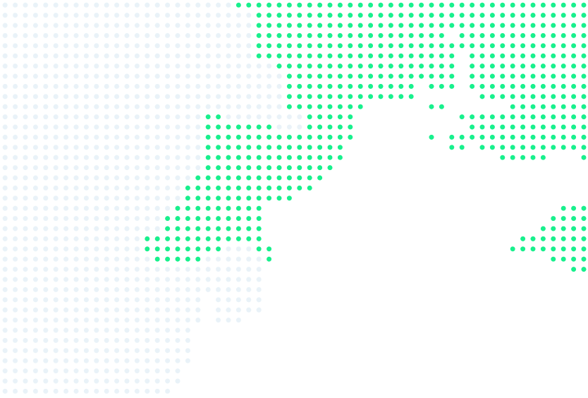

01
Chornomorsk
46.30° N, 30.66° E
Black Sea · Danube
We work in Chornomorsk on the Black Sea and in Izmail, Ukraine’s largest port on the Danube.

Where we work
46.30° N, 30.66° E

45.35° N, 28.84° E
Ukraine
Chornomorsk is deep-water, so it takes large sea-going vessels. Izmail is on the Danube, where we work with sea-going and river vessels. In both ports we handle grain, fertilisers and general cargo.


Services
Welcome
By using the INTERCONTACT website you agree to the Terms of Use and the Privacy Policy. The site uses no advertising cookies. If you allow analytics, Google Analytics will count visits without names or contact details, and we will see which pages and services people look at. You can change this any time with “Cookie settings” at the bottom of the page.
Analytics is on now
Analytics is off now